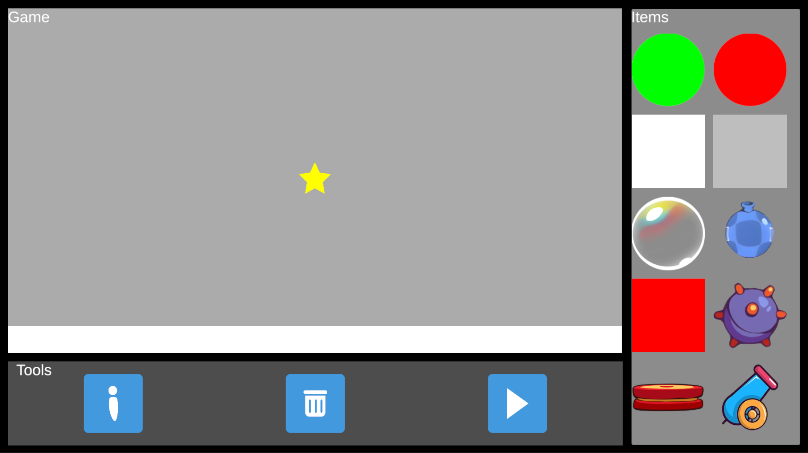
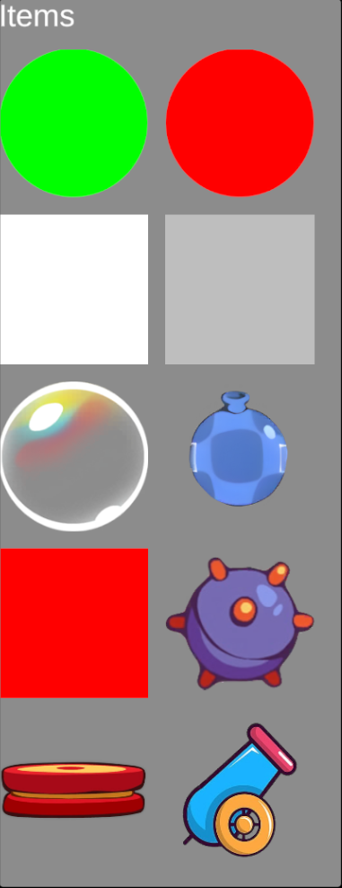
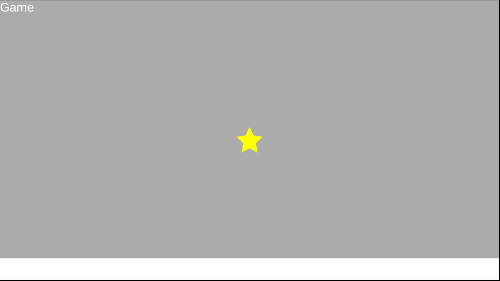
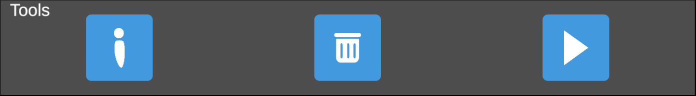
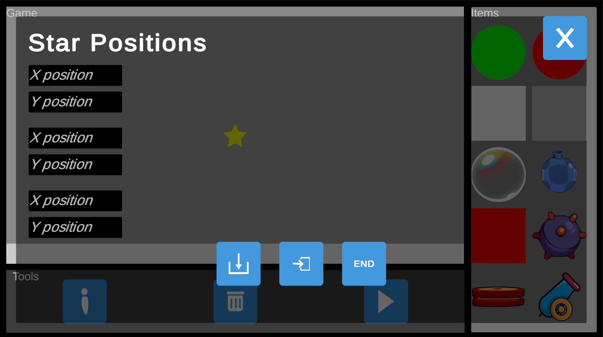
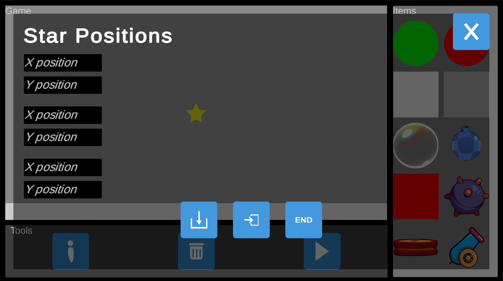

Editor Guide
Der Cut The Chain Editor ermöglicht es dir, eigene Level ganz nach deinen Vorstellungen zu erstellen.
Ein Level kann einfach oder detailliert, kurz oder lang, leicht oder schwierig sein – die Möglichkeiten sind endlos.
Allerdings kann es mit der Anzahl an zur Verfügung stehenden Objekten schwierig sein, genau das zu erstellen, was du willst.
Genau hier setzt dieser Editor-Guide an:
Er soll dir helfen – egal, ob du neu im Editor bist oder bereits ein erfahrener Ersteller - das Level zu erstellen,
das du erstellen willst.
Die Editor-Benutzeroberfläche

Grundsätzlich teilt sich der Editor in drei Bereiche auf: Das Spiel-Fenster, das Tools-Fenster und das Item-Fenster.
Jedes dieser drei Fenster hat im Editor eine entscheidende Rolle, also ist es wichtig, zu wissen, was alle Fenster machen,
damit du deine eigene Cut The Chain-Level erstellen kannst. Fangen wir mit dem ersten und einfachsten Bereich an, dem Items-Bereich:
Das Items-Fenster

Der Items-Bereich ist schnell erklärt: In diesem Bereich befindet sich ein Feld für jedes Objekt, das du platzieren kannst.
Tippe auf ein Feld, das das gewünschte Spielobjekt abbildet und das Objekt erscheint in der Mitte vom Spiel-Fenster.
Ab Version 1.03f kannst du ein Feld tippen und halten, um ein Popup mit verschiedenen Variationen des Objektes zu öffnen.
Tippe dann auf das Objekt, das du platzieren willst, und es erscheint wie gewohnt im Spiel-Bereich.
Das Spiel-Fenster

Im Spiel-Fenster siehts du das, was später das richtige Level sein wird.
Platziere vom Items-Fenster ein Objekt und es wird hier erscheinen.
Wenn du auf ein platziertes Objekt im Spiel-Fenster tippst, wählst du dieses Objekt aus. Ausgewählte Objekte leuchten grün auf.
Ziehe ein ausgewähltes Objekt, um die Position zu verändern. Tippe irgendwo anders, um die Auswahl zu löschen.
Tippe zweimal auf ein Objekt, um ein Info-Popup zu öffnen. Dazu mehr im Tools-Fenster.
Das Tools-Fenster

Das Tools-Fenster beinhaltet momentan drei Knöpfe, mit denen du ausgewählte Objekte bearbeiten kannst.
Wenn du ein ausgewähltes Objekt löschen möchtest, tippe, während dieses Objekt grün leuchtet, auf die Papiertonne.
Dann wird dieses Objekt unwiderruflich gelöscht.
 Tippe auf das kleine i, während du ein Objekt ausgewählt hast,
um das Info-Popup zu öffnen. Hier kannst du die Position, Rotation und Größe eines Objektes genau anpassen.
Beachte, dass für Positionen folgende Höchstwerte gelten: 9 bzw. -9 für die X-Achse, 5 bzw. -5 für die Y-Achse.

Tippe auf das i, während nichts ausgewählt ist, um das Leveleinstellungs-Popup zu öffnen.
Hier kannst du einzelne Einstellungen zum Level anpassen. Aktuell kannst du nur die Position der Sterne ändern,
aber in Zukunft werden hier mehr Einstellungen erscheinen.
Tippe auf das kleine i, während du ein Objekt ausgewählt hast,
um das Info-Popup zu öffnen. Hier kannst du die Position, Rotation und Größe eines Objektes genau anpassen.
Beachte, dass für Positionen folgende Höchstwerte gelten: 9 bzw. -9 für die X-Achse, 5 bzw. -5 für die Y-Achse.

Tippe auf das i, während nichts ausgewählt ist, um das Leveleinstellungs-Popup zu öffnen.
Hier kannst du einzelne Einstellungen zum Level anpassen. Aktuell kannst du nur die Position der Sterne ändern,
aber in Zukunft werden hier mehr Einstellungen erscheinen.
Unten findest du drei weitere Buttons. END beendet den Editor. SPEICHERN speichert das aktuelle Level,
nachdem du einen Namen eingegeben hast, in deinen Dateien unter /com.CutTheChain/CheckerT/files/LEVEL_NAME ab.
Mit LADEN kannst du einen Levelnamen eingeben und das entsprechende Level laden, oder das Level als JSON-String laden,
indem du anstatt einem Namen den JSON-String einfügst. Beachte, dass Levelnamen nur aus a-z, A-Z, 0-9, -, _, + bestehen dürfen.